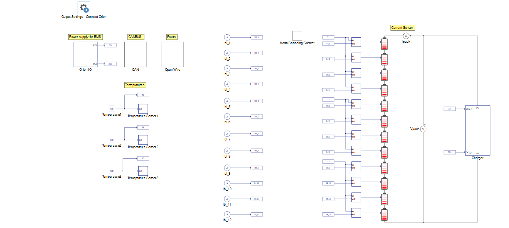
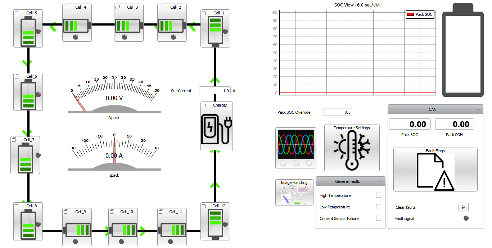
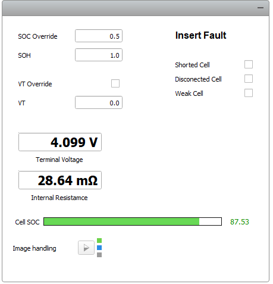
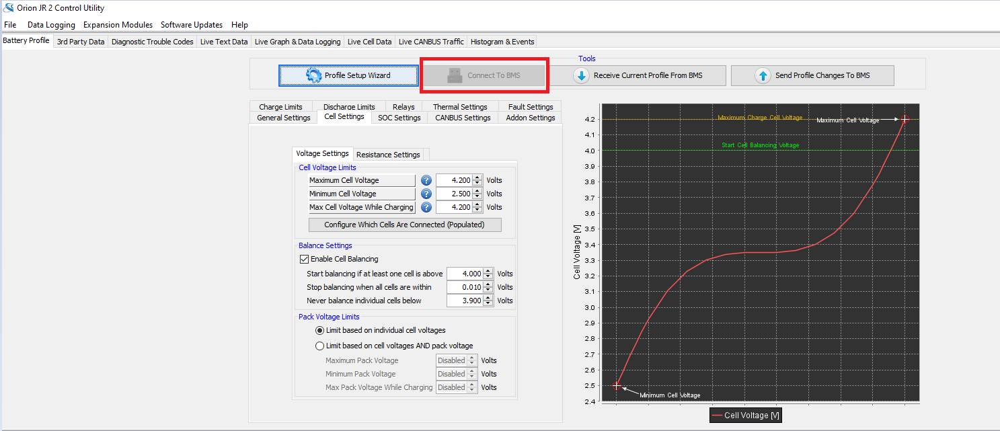
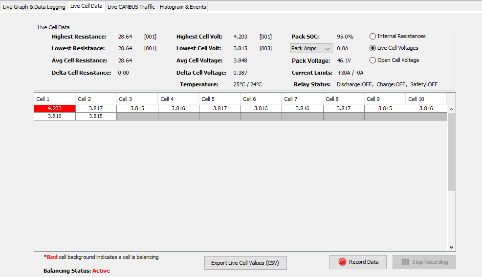
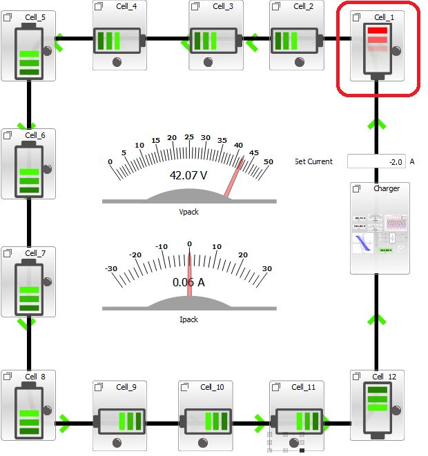
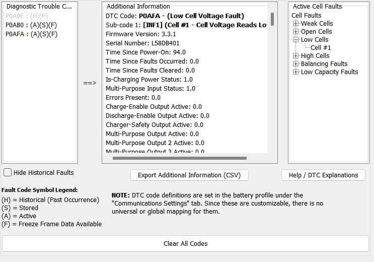
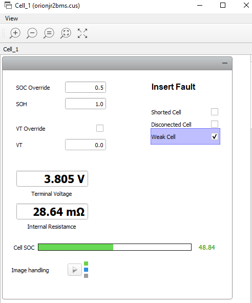
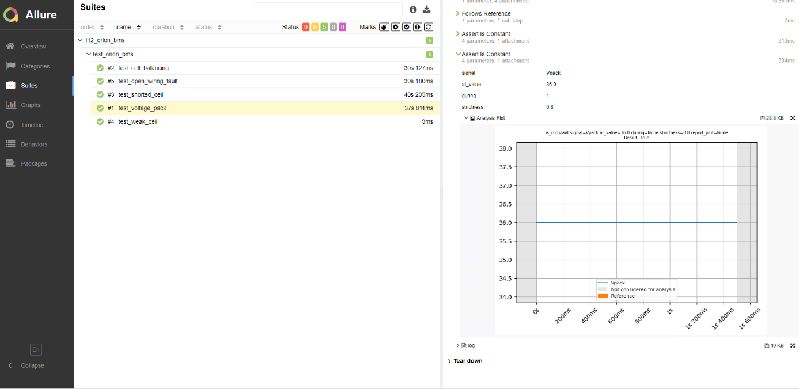

C-HIL example-Orion Jr 2 Battery Management
This application note presents how an off-the-shelf Battery Management System (BMS) can be tested in the Typhoon HIL environment. In the model described here, battery management is implemented using the Orion Jr 2 BMS.
Introduction
A Battery Management System (BMS) is a system responsible for supervising and managing a battery or battery pack, protecting it from operating outside of its safe operating region (overvoltage, undervoltage, overtemperature, undertemperature, etc.). Another important function of the BMS is balancing the battery cells to increase the longevity of each cell and to improve the overall capacity of the battery pack. Control and monitoring functions are applied to individual battery cells in the battery pack.
The main motivation for this application note is to show how the off-the-shelf Orion Jr 2 BMS can also be tested in real-time using the Typhoon HIL toolchain. This BMS is designed for Lithium-Ion battery packs with a nominal voltage of up to 48 V and supports up to 16 serially connected cells.
Model description
The schematic is shown in Figure 1. The power stage also includes a simplified model of a charger and a battery pack with 12 Battery Cell components connected in series. The Battery Cell components provide very detailed battery cell representations, including diffusion process, voltage hysteresis, and balancing circuit. All batteries are set equally as lithium-ion and parametrized in accordance with the configurations set in the Orion Jr 2 BMS. In addition, the temperature of all batteries (input of the battery cell components) is the same and can be changed in the simulation using a dedicated SCADA input. The nominal value of the battery pack voltage is 48 V. The battery cell component is directly used from the Source library category. More information about the component can be found in its documentation.

The Orion IO block contains the interface between the Orion Jr 2 BMS and the Typhoon HIL device. A CAN BUS subsystem is used for receiving messages about state of charge (SOC), state of health (SOH), Voltages, Currents, and Balancing currents from the BMS.
When it comes to the Charger subsystem, the simplified model contains a controlled current source whose value is set taking into account the charging and discharging current limits received from the BMS via analog inputs. The current of the battery pack and the voltages of the battery cells are measured in the simulation and sent to the BMS. The BMS calculates the voltage of the battery pack from the cell voltages measured in the simulation.
Orion BMS operation
The Orion Jr 2 BMS is intended to be used with 48 V Lithium battery packs. It receives the measurements of the battery pack current, the cell voltages, cell temperatures, and internal resistances, which it uses to estimate the SOC and SOH. The BMS's role is to ensure that batteries work within optimal safety conditions, and that electric charge is properly balanced across individual cells. The BMS also calculates currently available energy and maximum charging current in relation to cell condition and temperature. For HIL simulation, the BMS is connected to the simulated battery system and its simulated current sensor. Information on the battery during the simulation is sent from the HIL device to the Orion Jr 2 BMS via CAN communication. We use that information to check whether the simulated values and the measured values on Orion are comparable.
The Orion Jr 2 BMS has its own software (Orion Jr 2 Software Utility) that should be downloaded in order to configure the BMS settings and allow us to compare the simulation results with the ones estimated by the BMS.
Simulation
This example comes with a pre-built SCADA panel, shown in Figure 2. The root panel offers the most essential user interface elements to monitor and interact with the simulation during runtime. You can customize it freely to fit your needs.
The SCADA panel allows you to observe the operation of the BMS and the behavior of the battery pack through various widgets and scopes.

On the left side of the SCADA panel, the 12 cells connected to the charger are represented, and the direction of the current flowing through the pack is illustrated. There are also measurements for the battery pack voltage and current. On the top right side, you can notice the SOC measurement, calculated in the simulation.
The CAN sub-panel includes information received from the BMS through CAN communication, such as the SOC value estimated by the BMS, SOH, and fault flags. Using the General Faults sub-panel, it is possible to enable faults such as High temperature, Low temperature, and Current Sensor Failure.
Each cell sub-panel (Figure 3) contains measurements such as cell terminal voltage and internal resistance. You can also insert shorted cell, disconnected cell, and weak cell faults.
The Shorted cell fault applies 0 V to the selected cell, while the Disconnected Cell fault indicates to the BMS that a particular cell is disconnected by setting the corresponding digital output to 0.
- The Weak cell fault is triggered in the BMS when certain pre-programmed conditions are met, which does not necessarily indicate a dead cell.

Within the Charger sub-panel you are able to read the actual current value as well as the charge current limit, and discharge current limit.
To compare results between the Orion software and those in Typhoon HIL SCADA, first ensure that the Orion Jr 2 BMS is properly interfaced with the HIL device. Then, run the simulation in HIL SCADA and click Connect to BMS in the Orion software. You can then import the BMS settings prepared for this example. To do so, you should click on File, Load Profile from Disk, and select the bmsdefault.j2bms file. This file is available in the same folder as the example model. As shown in Figure 4, you can use the Battery Profile tab to specify some general settings such as Maximum Cell Voltage, Minimum Cell Voltage, enable/disable balancing, and specify balancing settings.

The first test case presented here demonstrates the balancing feature, triggered when a given cell voltage is out of the limits defined in the Orion software. In this example, the maximum cell voltage is set to 4.1 V and the minimum cell voltage is set to 2.5 V. In Typhoon HIL SCADA, you can then trigger the balancing for a given cell by accessing its sub-panel, manually specifying the voltage, and clicking VT Override. In Figure 5, the voltage of cell 1 is overridden and set to 4 V.
As a consequence, after some seconds the LED of cell 1 in the SCADA root panel turns red, confirming that the passive balancing for that cell is now active. If you open the Orion software and select the Live Cell Data tab you will be able to see the voltage values in all cells and, in this case, cell 1 one would be marked in red, confirming that the value is out of range and therefore balancing is active for that cell.

The balancing can be disabled in SCADA if you uncheck the Voltage Override checkbox or set the cell voltage to a value within the defined cell voltage limits.
Figure 6 and Figure 7 demonstrate BMS behavior in the case of a shorted cell fault. To force a fault, you can click on the Shorted Cell checkbox, within the cell subsystem. By doing that, the terminal voltage of this cell is set to 0 V. As a consequence, the cell that is shorted will be marked in red in Typhoon HIL SCADA, as shown in Figure 6. In the Orion Software, you will receive a message informing you about a possible fault and will be able to confirm that the voltage for this cell is 0. If you click on the Diagnostic tab, you will be able to see that you have a fault detected and in which cell (Figure 7).


The Weak cell fault can be triggered by clicking on the Weak Cell checkbox, which sets the SOH to a value significantly lower than the nominal one.

Test automation
For this model, there is a pre-built automated test that you can use. Actions done in SCADA manually can be tested automatically through Typhoon Test.
In this automated test, the following test cases are covered:
- Voltage pack
- Cell balancing
- Shorted cell
- Weak cell
- Open wiring fault
When it comes to the Voltage pack test, a comparison between the voltage measurements in the HIL simulation and in the Orion Jr 2 BMS are performed. The results are shown in Figure 9.

The Cell balancing test verifies if the balancing is correctly activated in case the voltage of a cell is out of its specified range. In this specific case, the cell voltage is set to 4.3 V, while the maximum allowed voltage is set to 4.2 V. In a similar way, with the remaining tests you can test the BMS response against Shorted Cell fault, Weak Cell, and open wiring fault.
You can obtain a full test report by running the test from TyphoonTest IDE (for easy access, press the "Run Test" button in the Example Explorer).
Example requirements
Table 1 provides detailed information about the file locations and hardware requirements for running the model in real-time, followed by the HIL device resource utilization when running the model using this minimal hardware configuration. This information is provided to help you with running and customizing the model as you see fit.
| Files | |
|---|---|
| Typhoon HIL files |
examples\models\hardware in the loop\orion_bms orionjr2bms.tse orionjr2bms.cus bmsdefault.j2bms examples\tests\examples\tests\113_orion_bms\ test_orion_bms.py |
| Externals | Orion Jr 2 Software Utility |
| Minimum hardware requirements | |
| No. of HIL devices | 1 |
| HIL device model | HIL 604 |
| Device configuration | 1 |
| Interface | HIL Connect, Orion 2 Jr BMS |
| HIL device resource utilization | |
| No. of processing cores | 1 |
| Max. matrix memory utilization | 0.34% |
| Max. time slot utilization | 23.12% |
| Simulation step, electrical | 1 µs |
| Execution rate, signal processing | 100 µs |
Authors
[1] Jovana Markovic